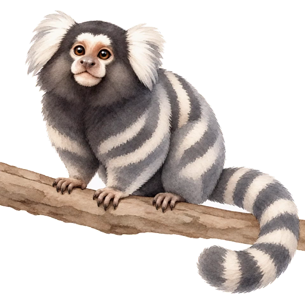

<!doctype html><html lang="zh-CN"><meta charset="utf-8"><meta name="viewport" content="width=device-width,initial-scale=1">
<title>狨猴视频动画预览</title>
<style>body{font:16px/1.6 system-ui,sans-serif;margin:24px;background:#eee;color:#292929}main{max-width:640px;margin:auto}video,img{display:block;width:100%;max-width:420px;margin:auto}[hidden]{display:none}button{font:inherit;margin:12px 8px 0 0;padding:6px 16px}</style>
<main><h1>狨猴视频动画</h1><video id="motion" muted loop playsinline poster="../../src/content/companions/marmoset-idle.png" src="../../src/content/companions/marmoset-motion.webm"></video><button id="play">播放</button><button id="stop">静止</button></main>
<script>
const motion=document.getElementById('motion'),still=document.getElementById('still');
function play(){motion.muted=true;motion.play().then(()=>{motion.hidden=false;still.hidden=true;}).catch(stop);}
function stop(){motion.pause();motion.currentTime=0;motion.hidden=true;still.hidden=false;}
document.getElementById('play').addEventListener('click',play);document.getElementById('stop').addEventListener('click',stop);
if(matchMedia('(prefers-reduced-motion: reduce)').matches)stop();else play();
</script></html>
